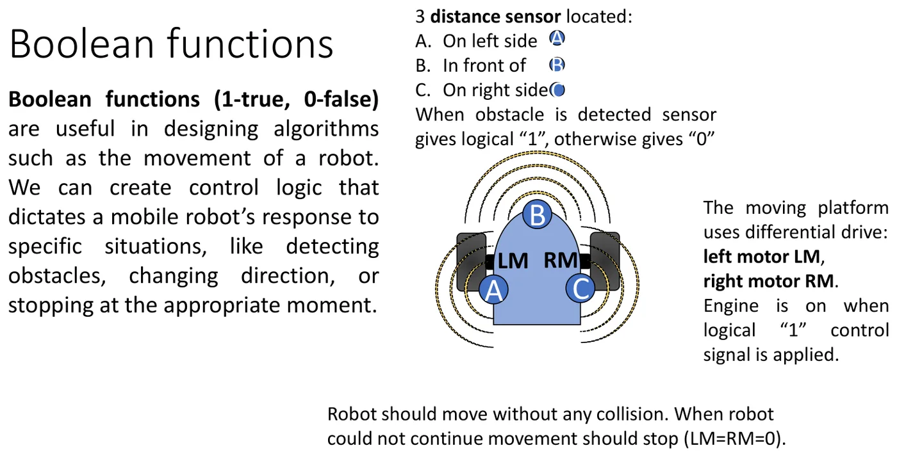
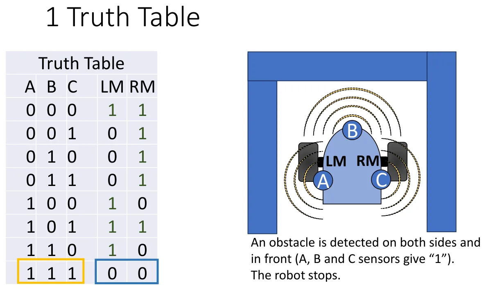
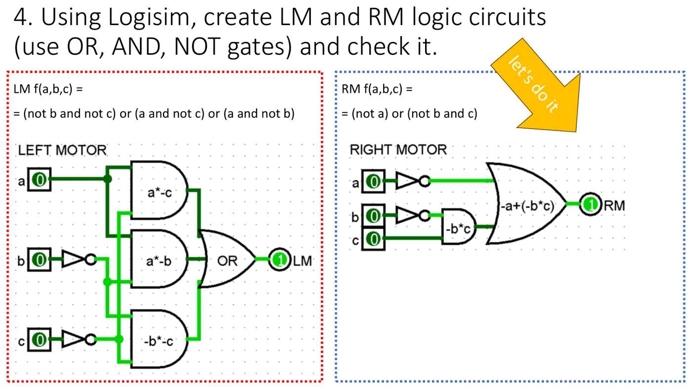

Co trzeba umieć przed zajęciami
- Bramki NOT, AND, OR, NAND, NOR, XOR i ich tabele prawdy — wykład 6 (Krótki konspekt).
- Jak z tabeli prawdy zapisać wzór (suma iloczynów) i prawa de Morgana — tamże.
Z wykładu 1 (2026/27)
Ćwiczenia 7–11 odbywają się w symulatorze Logisim — nie buduje się już fizycznych układów. Program jest darmowy; warto zainstalować go w domu i poćwiczyć przed zajęciami.
Logisim w pięć minut
Od autora strony (nie z wykładu)
Tego opisu nie ma w materiałach (tam jest tylko „uruchom Logisim”). To moja ściąga z obsługi programu — nazwy podaję po angielsku, tak jak w programie.
| Co chcesz zrobić | Jak |
|---|---|
| Wstawić wejście | ikona zielonego kwadratu na pasku (Input Pin) → kliknij na planszy |
| Wstawić wyjście | ikona zielonego kółka (Output Pin) |
| Wstawić bramkę | folder Gates po lewej (NOT, AND, OR, NAND, NOR, XOR) → kliknij na planszy |
| Narysować przewód | narzędzie strzałki (Edit), przeciągnij od końcówki do końcówki |
| Zmienić wartość wejścia (0 ↔ 1) | narzędzie rączki (Poke), kliknij wejście |
| Podpisać element | zaznacz go i wpisz nazwę w polu Label (tabela po lewej na dole) |
| Zmienić liczbę wejść bramki | zaznacz bramkę → Number Of Inputs |
| Obrócić element | zaznacz → Facing (albo strzałki na klawiaturze) |
| Powielić | Ctrl+D |
| Nowy obwód w tym samym pliku | menu Project → Add Circuit… |
Kolory przewodów mówią, co się dzieje:
| Kolor | Znaczenie |
|---|---|
| jasnozielony | logiczne 1 |
| ciemnozielony | logiczne 0 |
| niebieski | przewód „wisi” — nic nim nie steruje (to zwykle błąd: coś nie jest podłączone) |
| czerwony | konflikt — dwa wyjścia zwarte ze sobą albo błąd na wejściu bramki |
Sprawdzanie układu
Klikając rączką, przejdź wszystkie kombinacje wejść (dla 3 wejść jest ich 8) i porównaj wyjście z tabelą prawdy. Szybciej: menu Project → Analyze Circuit — Logisim sam wypisze tabelę prawdy narysowanego układu. ✚
Przykład z materiałów: robot omijający przeszkody
Plik startowy leży na serwerze z materiałami: mmajew/SYC/07 and 08/07 and 08 lab mobile robot.circ.


Opis słowny. Robot ma trzy czujniki przeszkód: A po lewej, B z przodu, C po prawej. Czujnik daje 1, gdy widzi przeszkodę. Napęd to dwa silniki: lewy LM i prawy RM; silnik pracuje, gdy dostaje 1. Robot ma jechać bez kolizji, a gdy nie ma dokąd — stanąć.
Po ludzku
Robot skręca jak czołg: gdy kręci się tylko prawy silnik, robot skręca w lewo. Gdy tylko lewy — w prawo. Oba — jedzie prosto. Żaden — stoi.
Krok 1: tabela prawdy
Dla każdej z 8 sytuacji decydujemy, co mają zrobić silniki.
| A | B | C | Sytuacja | Decyzja | LM | RM |
|---|---|---|---|---|---|---|
| 0 | 0 | 0 | nic nie widać | prosto | 1 | 1 |
| 0 | 0 | 1 | przeszkoda z prawej | w lewo | 0 | 1 |
| 0 | 1 | 0 | przeszkoda z przodu | w lewo | 0 | 1 |
| 0 | 1 | 1 | z przodu i z prawej | w lewo | 0 | 1 |
| 1 | 0 | 0 | przeszkoda z lewej | w prawo | 1 | 0 |
| 1 | 0 | 1 | z obu boków (korytarz) | prosto | 1 | 1 |
| 1 | 1 | 0 | z lewej i z przodu | w prawo | 1 | 0 |
| 1 | 1 | 1 | ze wszystkich stron | stop | 0 | 0 |


Krok 2: wzory
Z tabeli (po uproszczeniu mapą Karnaugha — to temat następnych zajęć) wychodzi:
Krok 3: schemat z bramek NOT, AND, OR


Krok po kroku
- Wstaw trzy wejścia i podpisz je
a,b,c. Wstaw wyjście i podpiszRM. - Policz, czego potrzebujesz. Dla RM = + ·c: dwa NOT (dla a i b), jeden AND (dla ·c), jeden OR.
- Wstaw bramki od lewej do prawej, w kolejności wzoru: najpierw negacje, potem iloczyn, na końcu suma.
- Połącz przewodami. Żaden przewód nie może zostać niebieski.
- Rączką ustaw po kolei wszystkie 8 kombinacji i porównaj
RMz tabelą. - To samo dla
LM— w tym samym pliku, obok (wejścia a, b, c mogą być wspólne).
Dobry nawyk
Każdej bramce nadaj etykietę z tym, co liczy (na zdjęciu: a*-c, -b*c). Gdy wynik się nie zgadza, od razu widać, który kawałek wzoru jest zły.
Bramki NOT, AND, OR z samych NAND
Bramka NAND jest uniwersalna: da się z niej zbudować każdą inną. Na zajęciach budujesz trzy „klocki” — każdy w osobnym obwodzie (Project → Add Circuit).

| Klocek | Jak zbudować | Ile NAND | Dlaczego działa |
|---|---|---|---|
| NOT | oba wejścia NAND zwarte razem | 1 | = |
| AND | NAND, a za nim NOT | 2 | podwójna negacja: = a·b |
| OR | NOT na każdym wejściu, potem NAND | 3 | de Morgan: = a + b |
Krok po kroku
- Project → Add Circuit…, nazwa np.
NOT_nand. Wstaw wejście, jedną bramkę NAND, wyjście. Oba wejścia NAND połącz z tym samym wejściem. Sprawdź: 0 → 1, 1 → 0. - Nowy obwód
AND_nand: dwa wejścia → NAND → drugi NAND ze zwartymi wejściami → wyjście. Sprawdź 4 kombinacje. - Nowy obwód
OR_nand: każde wejście przez „NOT z NAND”, potem NAND. Sprawdź 4 kombinacje. - Wróć do obwodu
main. Twoje obwody są teraz na liście po lewej — klikasz je i wstawiasz jak zwykłe bramki. - Narysuj funkcję jeszcze raz, ale zamiast NOT/AND/OR wstaw swoje klocki — w tym samym układzie co wzór.
- Sprawdź wszystkie kombinacje: wynik musi być identyczny jak w wersji ze zwykłymi bramkami.
Układ z klocków działa, ale jest duży (na zdjęciu: 7 bramek NAND dla RM). Jak go zmniejszyć — na następnych zajęciach.
Przykład rozwiązany od zera
Od autora strony (nie z wykładu)
Własny przykład — inna funkcja niż na slajdzie z wykładu, ale ta sama droga. Zrób go w domu, a zadanie na zajęciach pójdzie automatycznie.
Funkcja: y = ·b + (b ⊕ c)
1. Tabela prawdy. Liczymy osobno każdy składnik, potem sumę.
| a | b | c | ·b | b ⊕ c | y |
|---|---|---|---|---|---|
| 0 | 0 | 0 | 0 | 0 | 0 |
| 0 | 0 | 1 | 0 | 1 | 1 |
| 0 | 1 | 0 | 1 | 1 | 1 |
| 0 | 1 | 1 | 1 | 0 | 1 |
| 1 | 0 | 0 | 0 | 0 | 0 |
| 1 | 0 | 1 | 0 | 1 | 1 |
| 1 | 1 | 0 | 0 | 1 | 1 |
| 1 | 1 | 1 | 0 | 0 | 0 |
2. Bramki: jeden NOT (dla a), jeden AND, jeden XOR, jeden OR. Wejście b rozgałęzia się do AND i do XOR.
3. Z klocków NAND. XOR nie ma gotowego klocka, więc rozpisujemy go: b ⊕ c = b· + ·c — to 2 × NOT, 2 × AND, 1 × OR.
| Część wzoru | Klocki | NAND |
|---|---|---|
| NOT | 1 | |
| ·b | AND | 2 |
| b ⊕ c | 2 NOT + 2 AND + OR | 2 + 4 + 3 = 9 |
| suma końcowa | OR | 3 |
| razem | 15 |
Zadania treningowe
1. Od opisu do tabeli
Wentylator łazienkowy ma się włączyć (F = 1), gdy jest za ciepło (T = 1) albo gdy jest wilgotno (H = 1) i okno jest zamknięte (W = 0). Zapisz wzór i tabelę prawdy.
Pokaż rozwiązanie
F = T + H·
| T | H | W | F |
|---|---|---|---|
| 0 | 0 | 0 | 0 |
| 0 | 0 | 1 | 0 |
| 0 | 1 | 0 | 1 |
| 0 | 1 | 1 | 0 |
| 1 | 0 | 0 | 1 |
| 1 | 0 | 1 | 1 |
| 1 | 1 | 0 | 1 |
| 1 | 1 | 1 | 1 |
Bramki: 1 NOT, 1 AND, 1 OR.
2. Od tabeli do wzoru
Funkcja trzech zmiennych jest równa 1 tylko dla abc = 001 i abc = 110. Zapisz jej wzór i policz bramki.
Pokaż rozwiązanie
Dla każdej jedynki piszemy iloczyn wszystkich zmiennych — zmienna z zerem dostaje negację:
y = ··c + a·b·
Bramki: 3 NOT, 2 AND (trzywejściowe), 1 OR.
3. XOR z czterech NAND
Rozpisany z klocków XOR kosztuje 9 bramek NAND. Da się to zrobić czterema. Sprawdź tabelą prawdy, że układ: n1 = , n2 = , n3 = , y = to XOR.
Pokaż rozwiązanie
| a | b | n1 | n2 | n3 | y |
|---|---|---|---|---|---|
| 0 | 0 | 1 | 1 | 1 | 0 |
| 0 | 1 | 1 | 1 | 0 | 1 |
| 1 | 0 | 1 | 0 | 1 | 1 |
| 1 | 1 | 0 | 1 | 1 | 0 |
Kolumna y to dokładnie XOR. Wniosek: budowanie „klocek po klocku” zawsze działa, ale rzadko jest najkrótsze.
4. Ile bramek NAND?
Funkcja y = a·b + c. Ile bramek NAND potrzeba metodą klocków? A ile po uproszczeniu?
Pokaż rozwiązanie
Klocki: AND (2) + OR (3) = 5 bramek.
Uproszczenie: y = = — czyli NAND z dwóch sygnałów: (jeden NAND) i (jeden NAND ze zwartymi wejściami). Razem 3 bramki.
5. Zbuduj w Logisimie
Narysuj funkcję z przykładu (y = ·b + (b ⊕ c)) na zwykłych bramkach, potem obok — z klocków NAND, używając dla XOR wersji z zadania 3. Ile bramek NAND wyszło?
Pokaż rozwiązanie
NOT (1) + AND (2) + XOR (4) + OR (3) = 10 bramek zamiast 15. Oba układy muszą dać kolumnę y: 0, 1, 1, 1, 0, 1, 1, 0.
Co najczęściej zabiera punkty
- Niebieski przewód — niepodłączone wejście bramki. Bramka w Logisimie ma domyślnie 5 wejść; nieużywane są ignorowane, ale lepiej ustawić Number Of Inputs na tyle, ile trzeba.
- Przewód, który wygląda na połączony, a nie jest (brak kropki na skrzyżowaniu).
- Sprawdzenie tylko 2–3 kombinacji zamiast wszystkich.
- Zła kolejność wierszy w tabeli prawdy — zawsze licz binarnie: 000, 001, 010, 011…
- Klocek NAND sprawdzony „na oko”, a z błędem — każdy klocek przetestuj osobno, zanim go użyjesz.